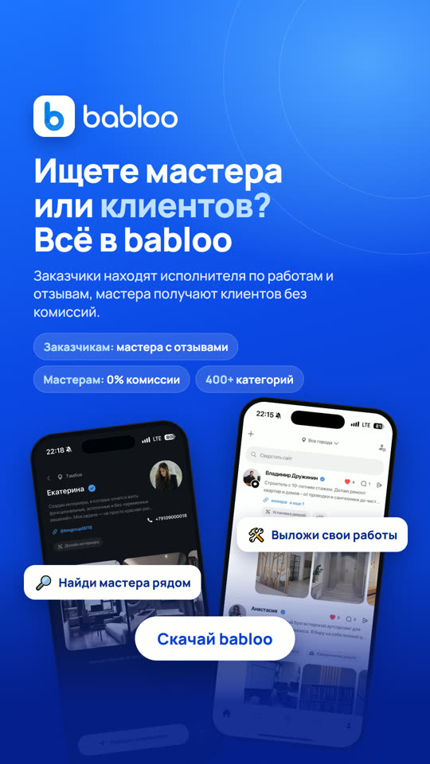

Рекламные сторис 1080×1920 для блогеров: приложение-лента исполнителей услуг. Цвета бренда, реальные экраны приложения в светлой и тёмной теме, анимированная версия в MP4 и статичные PNG. Внизу оставлено место под стикер-ссылку.
Выбран заказчиком, правки внесены.
Альтернативный акцент: экран стартует в тёмной теме.
Яркий фон, два экрана и плашки - вариант, с которого начинали.
